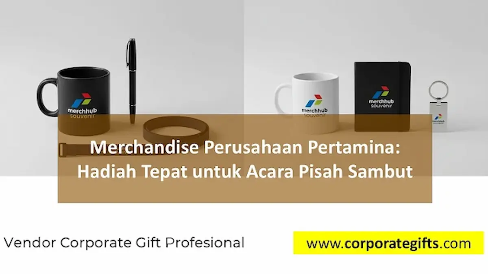

Corporate Gifts ID - Merchandise perusahaan Pertamina untuk acara pisah sambut adalah suvenir korporat bernilai tinggi seperti gift set eksekutif, tumbler stainless steel SUS 304, leather notebook agenda, atau plakat penghargaan kustom yang dikurasi khusus guna mengapresiasi pejabat yang purnatugas maupun menyambut pemimpin baru di lingkungan holding, subholding, dan anak perusahaan Pertamina. Pemilihan cinderamata yang tepat tidak hanya memberikan kenangan mendalam, tetapi juga mencerminkan reputasi integritas dan standar profesionalisme korporasi energi nasional kelas dunia.
Acara serah terima jabatan (sertijab) dan malam pisah sambut di lingkungan BUMN seperti Pertamina memiliki dimensi protokoler yang sangat formal sekaligus penuh muatan kekeluargaan. Pada momentum ini, pertukaran cinderamata menjadi jembatan diplomasi organisasi untuk mempererat relasi antar-manajemen, memberikan penghargaan atas dedikasi bertahun-tahun, serta menumbuhkan optimisme kolaborasi bagi tim di bawah nakhoda kepemimpinan yang baru.
Poin Kunci Merchandise Pisah Sambut Pertamina:
- Representasi Prestise BUMN: Cinderamata harus mencerminkan wibawa institusi Pertamina dengan material premium, kemasan mewah, dan finishing presisi.
- Sentuhan Personal & Apresiatif: Personalisasi nama pejabat dan masa bakti pengabdian memberikan nilai sentimental yang tak terlupakan.
- Kepatuhan Brand Guidelines: Penempatan palet warna resmi korporat (merah, biru, hijau) serta logo Pertamina wajib mematuhi aturan visual resmi.
- Fungsionalitas Berkelanjutan: Mengutamakan barang yang bermanfaat nyata untuk menunjang aktivitas kerja dan mobilitas harian penerima.
- Transparansi Pengadaan B2B: Pengadaan legal dilengkapi faktur pajak resmi, sertifikat garansi mutu, dan ketepatan waktu distribusi door-to-door.
Urgensi & Filosofi Merchandise dalam Pisah Sambut Pertamina
Dalam ekosistem korporasi skala besar, mutasi jabatan, promosi kepemimpinan, dan pelepasan purnabakti merupakan siklus rutin yang sarat akan dinamika strategis. Suvenir pisah sambut hadir sebagai media komunikasi non-verbal yang menyampaikan rasa terima kasih tulus dari institusi atas kontribusi target kinerja, inovasi, dan loyalitas yang telah dicurahkan selama masa jabatan berlangsung.
Sebaliknya, bagi pejabat yang baru dilantik, penerimaan paket cinderamata selamat datang (welcoming corporate gift) menjadi bentuk sambutan hangat keluarga besar unit kerja. Hal ini secara psikologis mempercepat adaptasi kepemimpinan, membangun kedekatan emosional dengan jajaran staf, serta menegaskan kembali komitmen bersama untuk mencapai target operasional perusahaan ke depan.

Kombinasi pulpen metal eksklusif, mug keramik matte, notebook agenda kulit, dan gantungan kunci grafir logo Pertamina.
Kategori Merchandise Unggulan Sesuai Profil Acara
Untuk memastikan cinderamata yang disiapkan tepat sasaran dan proporsional terhadap tingkatan acara, panitia pengadaan di lingkungan Pertamina dapat mengklasifikasikan pilihan suvenir ke dalam tiga pilar kategori utama berikut:
1. Gift Set Eksklusif Pejabat & Direksi
Untuk level pimpinan tinggi seperti General Manager, Vice President, hingga jajaran Direksi, format gift set souvenir custom VIP adalah pilihan yang paling direkomendasikan. Paket ini umumnya dikemas dalam kotak rigid hardbox bermagnet atau kotak kayu lapis beludru (velvet box) dengan tata letak busa presisi (die-cut EVA foam).
Kombinasi item di dalamnya mencakup pulpen metal rollerball grafir laser, buku agenda bersampul kulit sintetis termoplastik (PU Leather) dengan deboss logo timbul, smart tumbler sensor suhu LED, dan kartu flashdisk metal dual-connector. Setiap item dipersonalisasi dengan grafir nama pejabat beserta ukiran masa pengabdian, menjadikannya benda koleksi yang sangat berharga.
2. Koleksi Ramah Lingkungan Sejalan Prinsip ESG
Sejalan dengan komitmen Pertamina dalam mendukung transisi energi hijau dan keberlanjutan lingkungan (Environmental, Social, and Governance / ESG), pemilihan souvenir perusahaan ramah lingkungan kian diminati dalam berbagai perhelatan resmi.
Item suvenir seperti tumbler botol minum berbahan baku bambu alami yang dipadukan stainless steel food grade SUS 304, tas jinjing kanvas katun organik tebal (organic canvas tote bag), serta buku catatan dari kertas daur ulang bersertifikat FSC membuktikan bahwa apresiasi korporat dapat berjalan harmonis dengan kesadaran menjaga kelestarian bumi.
3. Apparel Kerja Resmi & Drinkware Higienis
Bagi perhelatan pisah sambut yang dihadiri oleh seluruh staf divisi dan mitra kerja eksternal, cinderamata dalam kategori merchandise apparel kantor dan drinkware memiliki daya guna harian yang sangat tinggi.
Kaos polo katun pique premium dengan bordir komputer berkerapatan tinggi menghadirkan kesan rapi saat dikenakan pada agenda santai seperti temu akrab (gathering) atau olahraga bersama. Dipadukan dengan mug keramik berlapis finishing doff matte atau tumbler vakum penahan suhu panas dan dingin, cinderamata ini menjamin brand exposure Pertamina hadir secara konsisten di meja kerja para karyawan setiap hari.
Tabel Matriks Rekomendasi Cinderamata Pisah Sambut BUMN
Berikut panduan komparatif pemilihan paket merchandise berdasarkan segmentasi audiens dan teknik aplikasinya:
| Kategori Penerima | Rekomendasi Paket Cinderamata | Teknik Branding Logo | Nilai Manfaat & Simbolisme |
|---|---|---|---|
| Pejabat Tinggi / Direksi / Purnabakti | Executive Gift Set Box (Plakat Logam, Pen Metal Signature, Agenda Kulit, Smart Tumbler) | Grafir Laser Serat Optik & Foil Emas | Penghargaan tertinggi atas dedikasi dan wibawa kepemimpinan korporasi. |
| Manajer & Kepala Divisi (Mutasi/Promosi) | Corporate Partnership Set (Notebook Kulit PU, Powerbank Fast Charging, Vacuum Flask SUS304) | Deboss Presisi & UV Print High-Res | Mendukung produktivitas dan mobilitas kerja pada unit penugasan baru. |
| Rekan Kerja Tim & Staf Divisi Internal | Employee Loyalty Pack (Tumbler Stainless Steel, Kaos Polo Pique Katun, Lanyard Kulit) | Bordir Komputer & Grafir Nama | Mempererat solidaritas tim kerja dan merawat memori kebersamaan kantor. |
| Tamu Undangan & Rekanan Vendor B2B | Eco-Friendly Event Pack (Tote Bag Kanvas 12oz, Buku Daur Ulang Kraft, Pen Metal) | Sablon DTF Ramah Lingkungan | Memperkuat citra kepedulian lingkungan dan transparansi tata kelola ESG. |
Standar Kustomisasi & Kepatuhan Brand Guidelines Pertamina
Sebagai entitas BUMN terkemuka, Pertamina memiliki panduan identitas visual yang sangat ketat (Corporate Brand Guidelines). Penerapan logo pada cinderamata pisah sambut tidak boleh dilakukan sembarangan guna menjaga integritas merek korporasi:
- Akurasi Warna Logo: Simbol anak panah tiga warna Pertamina melambangkan kejelasan arah masa depan, keterbukaan, dan keberlanjutan. Penerapan teknik cetak digital UV printing wajib mengacu pada kode warna standar (Pertamina Red, Pertamina Blue, dan Pertamina Green) tanpa distorsi saturasi.
- Zona Aman Logo (Clear Space Area): Peletakan logo pada permukaan tumbler, tas, atau cover buku wajib menyisakan ruang bebas proporsional dari tepi material agar komposisi visual tetap seimbang dan mudah terbaca.
- Pilihan Grafir Laser Monokrom: Untuk suvenir berbahan metal atau stainless steel, teknik grafir laser menghasilkan ukiran permanen berwarna perak keabuan alami (etched metal finish) yang menghadirkan impresi mewah tanpa khawatir cat terkelupas.
- Emboss & Deboss Tekstur: Pada material kulit sintetis PU, teknik blind deboss memberikan efek cekung halus bertekstur premium yang sangat disukai para eksekutif korporat.
Tips Perencanaan Alokasi Budget dan Timeline Pengadaan
Agenda pisah sambut pejabat sering kali diumumkan dalam waktu yang relatif singkat mengikuti keluarnya Surat Keputusan (SK) mutasi resmi. Agar proses pengadaan tidak terburu-buru dan menghasilkan suvenir berkualitas prima, perhatikan rambu-rambu praktis berikut:
Pertama, tentukan alokasi pagu anggaran berdasarkan proporsi penerima VIP dan reguler. Porsi anggaran terbesar dapat dialokasikan pada 1 hingga 3 paket gift set pimpinan utama, sementara cinderamata staf dapat dioptimalkan melalui pembelian grosir dengan skala volume ekonomis.
Kedua, pilihlah vendor yang memiliki legalitas badan usaha resmi, sanggup menerbitkan faktur pajak PPN, serta menyediakan fasilitas pembuatan dummy atau preview 3D mockup gratis sebelum tahap fabrikasi massal dimulai. Dengan demikian, panitia terhindar dari risiko kesalahan tata letak teks nama maupun nomor masa bakti pejabat.
Pertanyaan Seputar Merchandise Pisah Sambut Pertamina (FAQ)
Kesimpulan dan Konsultasi Pengadaan Resmi
Merchandise perusahaan dalam acara pisah sambut Pertamina bukan sekadar seremonial tukar menukar hadiah, melainkan jembatan penghargaan yang menyatukan dedikasi masa lalu dengan visi kepemimpinan masa depan. Memilih suvenir berkelas, fungsional, dan memiliki mutu material tinggi merupakan cerminan komitmen korporasi dalam menghargai modal insani terbaiknya.
Percayakan kebutuhan pengadaan merchandise pisah sambut dan suvenir BUMN Anda kepada tim spesialis CorporateGifts.ID. Kami siap membantu mulai dari kurasi konsep, pembuatan sampel mockup 3D gratis, produksi cepat berstandar industri, hingga pengiriman logistik aman ke seluruh kantor operasional Pertamina di Indonesia.